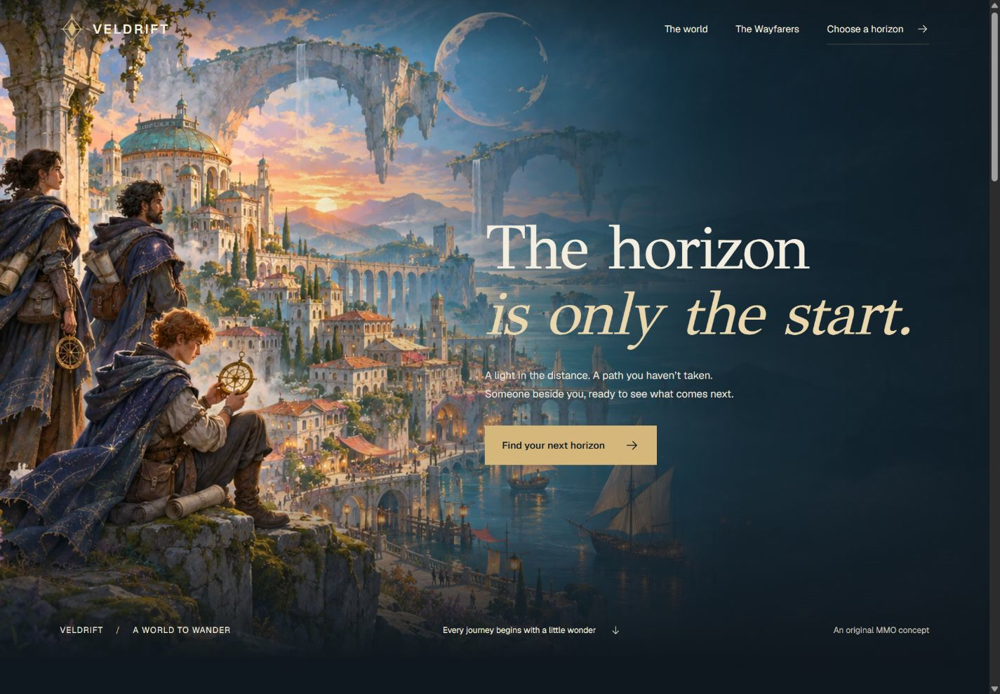

Three briefs.
A world of
possibility.
A fantasy world, a trading workspace, and a creative studio. Here’s what Kishu did, what the tools contributed, and why the results took different shapes.
Explore the collection A Kishu project · November 4, 2026
The brief set the priority.
“Put your own spin on it; focus on beauty and wow-factor over anything else.”
The collection grew from that direction: make the work beautiful, show different uses, and keep the explanation approachable.
Here’s what happened.
Six choices that shaped the collection.
The action, and the reason behind it.
Kishu framed the work.
The user chose the goal. Kishu guided the route, brought in design guidance, and kept the build focused on finished, working pages.
Why: Each brief needed a different balance of visual storytelling, information and interaction.
The artwork became original.
The main agent wrote scene-specific prompts. Imagegen created Veldrift’s six paintings and Stillroom’s four studio images, without reference images. The agent selected and integrated the outputs.
Why: The user wanted original assets for publication. Each prompt also reserved the right space for the actual page composition.
Three briefs took different forms.
Veldrift lets the landscape lead. Meridian gives a moving market a clear, dark workspace. Stillroom pairs warm editorial photography with an easy booking flow.
Why: Kishu’s design taste engine guides choices for the task. A collection should show range, with each interface serving its own purpose.
Independent builds ran together.
The main agent assigned one coding worker to each demo, using the user’s saved model preferences. Shared assets, the collection page and release integration stayed with the main agent.
Why: Clear file boundaries let separate builds proceed together without competing over the same files.
The interactions earned their place.
Visitors choose a landscape, explore simulated prices, or review a workshop booking. Behavior tests check those state changes; browser inspection checks the rendered experience.
Why: A beautiful demo is more convincing when its controls do useful work. Fictional data and local-only actions keep the examples honest.
The explanation stayed human.
The public story names the consequential choices and the tools behind them. Detailed prompts, provenance and verification stay with the source project.
Why: Understanding the result should take curiosity, not a download bundle or a wall of technical records.
Try a world.
Try a workflow.
These are real builds for fictional products. The market is simulated, the booking stays in your browser, and Veldrift is a concept rather than a playable game.
Explore VeldriftOpen Meridian
Visit Stillroom
The foundations, credited.
Kishu brings together routing, a design taste engine and ADHD-aware communication. Its foundations are pstack, Impeccable, and i-have-adhd; see the project credits and licenses. The artwork was generated with OpenAI’s image-generation tool. This story describes observable actions, not private model reasoning or measured cost savings.